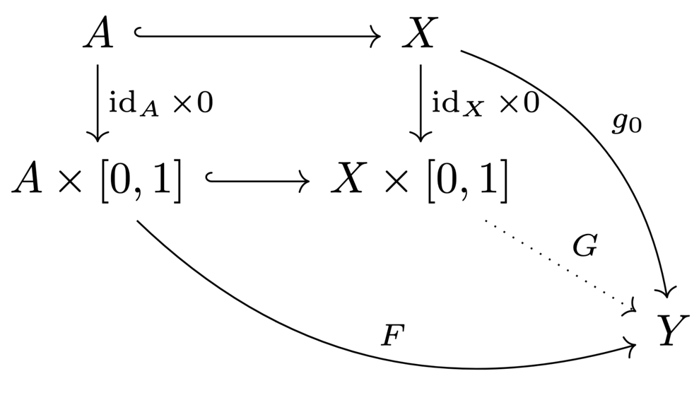

8 Homotopies
Homotopies
Definition 8.1
Homotopy
\(\begin{align*} \text{Let } & X, Y \text{ be topological spaces} \\ & f_0, f_1 : X \to Y \text{ be continuous maps} \\ \end{align*}\)
\(f_0, f_1\) are homotopic \((f_0 \simeq f_1)\) if
\(F\) is called a homotopy from \(f_0\) to \(f_1\).
Remark 8.2
Homotopy is an equivalence relation on the set of continuous maps \(X \to Y\).
Denoty by \([X, Y]\) the set of equivalence classes, and the homotopy class of \(f\) by \([f]\).
Example 8.3
The identity map \(S^1 \to S^1\) and the map \(z \mapsto z^2\) are not homotopic.
\([z \mapsto z^n]\) are disctinct homotopy classes which generated \([S^1, S^1]\).
Definition 8.4
Nullhomotopic and essential maps
A map is nullhomotopic if it is homotopic to a constant map, and essential otherwise.
Example 8.5
- The identity map is essential on \(S^1\), and nullhomotopic on \(\R^n\).
- The inclusion \(S^1 \hookrightarrow S^2\) is nullhomotopic. In fact, any map \(S^1 \to S^2\) is nullhomotopic.
Homotopy equivalence
Definition 8.6
Homotopy equivalence
\(X, Y\) are homotopy equivalent \((X \simeq Y)\) if
\(f\) and \(g\) are called homotopy equivalences.
Example 8.7
- The circle, the cylinder, and the Moebius strip are homotopy equivalent.

Remark 8.8
\(\simeq\) is an equivalence relation. The equivalence classes are called homotopy types.
Lt \(f : X \to Y, g: Y \to X\) be homotopy equivalences. Then for all topological spaces \(T\), there exists bijections
These are induced by pre-/post-composition with \(f\) or \(g\).
Homotopy classes form the morphisms of a category \(\operatorname{hoTop}\), where
- objects are topoogical spaces
- the identities are \([\id_X]\)
Two spaces are equivalent in \(\operatorname{hoTop} \iff\) they are homotopy equivalent.
Definition 8.9
Contractible space
A space is contractible if it is homotopy equivalent to a one-point space \(*\).
Remark 8.10
If \(X\) is contractible, then for all topological spaces \(T\), we have
Example 8.11
- \(\R^n\) is contractible.
- \(S^n\) is not contractible.
- The dunce hat is contractible.
Retracts and deformation retracts
Definition 8.12
Relative homotopy
\(\begin{align*} \text{Let } & A \subseteq X \text{ be a subspace} \\ & f_0, f_1 : X \to Y \end{align*}\)
\(f_0, f_1\) are homotopic relative to \(A\) \((f_0 \simeq f_1 \rel A)\) if
Definition 8.13
Retract, (strong) deformation retraction
\(\begin{align*} \text{Let } & i : A \hookrightarrow X \text{ be an inclusion} \\ & r : X \to A \text{ be a retraction} \quad (r \circ i = \id_A) \end{align*}\)
\(A\) is called a retract of \(X\).
If \(i \circ r \simeq \id_X (\rel A)\), we say that the homotopy is a (strong) deformation retraction, and \(A\) is a (strong) deformation retract of \(X\). In particular, \(X\) and \(A\) are homotopy equivalent.
Example 8.14
Theorem 8.15
Retracts and extensions of maps
Let \(A \subseteq X.\)
Proof
\(\begin{align*} \text{Let } & r : X \to A \text{ be a retraction} \\ & i : A \hookrightarrow X \text{ be an inclusion} \\ & f : A \to Y \text{ be a map} \end{align*}\)
Then, on \(A\), we have
so \(f \circ r\) is an extension of \(f\) to \(X\).
\(\id_A\) extends to a map \(r : X \to A\), and \(r\) is a retraction.
Theorem 8.16
Deformation retracts and unique extensions of maps
Let \(A \subseteq X\) be a subspace.
Proof
\(\begin{align*} \text{Let } & r : X \to A \text{ be a retraction } : i \circ r \simeq \id_X \rel A \\ & f_0, f_1 : X \to Y \text{ be to extensions of} \\ & f = f_0 \circ i f:1 \circ i : A \to Y \end{align*}\)
\(\id_A\) extends to a map \(r : X \to A\). Both \(i \circ r\) and \(\id_X\) are extensions of \(i : A \hookrightarrow X\). By hypothesis, they are homotopic relative to \(A\),
Remark 8.17
Even if \(i : A \hookrightarrow X\) is a homotopy equivalence, \(A\) is not always a deformation retract on \(X\). For example, there may exist \(r : X \to A\) such that \(r \circ i \simeq \id_A\), but \(r\) may not fix the points of \(A\).
Homotopy extension property
Definition 8.18
Mapping cylinder
Let \(f : X \to Y\) be a continuous map. The mapping cylinder of \(f\) is the adjunction space \(M_f\) of the pushout square

Remark 8.19
\(Y\) is a strong deformation retract of \(M_f\). Hence, any map \(f : X \to Y\) factors into an inclusion and a homotopy equivalence:

Definition 8.20
Homotopy extension property (HEP)
Let \((A \subseteq X)\) be a closed subspace. The pair \((X, A)\) has the homotopy extension property if
- for all spaces \(Y\)
- for all homotopies \(F : A \times [0, 1] \to Y\) from \(f_0\) to \(f_1\)
- for any map \(g_0 : X \to Y\) extending \(f_0\),
there exists a homotopy \(G : X \times [0, 1] \to Y\) from \(g_0\) to some \(g_1\) extending \(F\):

Lemma 8.21
HEP and inclusion mapping cylinder
Let \(R = A \times [0, 1] \cup X \times \{0\}\).
Proof
\(\begin{align*} \text{Let } & F : A \times [0, 1] \hookrightarrow R \\ & g_0 : X \cong X \times \{0\} \hookrightarrow R \text{ be inclusions} \end{align*}\)
\(\begin{align*} \overset{\text{HEP}}{\implies} & \exists\, G : X \times [0, 1] \to R \text{ extension of } F, g_0 \\ \implies & G \text{ is retraction of the inclusion } R \hookrightarrow X \times [0, 1] \end{align*}\)
\(\begin{align*} \text{Let } & r : X \times [0, 1] \to R \text{ be a retraction of} \\ & i : R \hookrightarrow X \times [0, 1] \end{align*}\)
\(R\) is the pushout of of \(A \subseteq X\) and \(A \times [0, 1]\). Hence, for the homotopy \(F : A \times [0, 1] \to Y\) from \(f_0\) to \(f_1\) and the extension \(g_0 : X \to Y\) of \(f_0\), we get by the universal property of the pushout the map \(k : R \to Y\).
The homotopy \(k \circ r : X \times [0, 1] \to Y\) extends \(k\), and thus \(F\) and \(f_0\).
Corollary 8.22
Products preserve the HEP
If \((X, A)\) has the HEP, then so does \(W \times X, W \times A)\) for all spaces \(W\).
Proof
If \(r : X \times I \to R\) is a retraction, then so is \(\id_W \times r : W \times (X \times I) \to W \times R\).
Deformation retractions via the homotopy extension property
Theorem 8.23
Strong deformation retract from HEP
If \((X, A)\) has the HEP and \(i : A \hookrightarrow X\) is a homotopy equivalence, then \(A\) is a strong deformation retract of \(X\).
Proof
Step 1: \(A\) is a deformation retract of \(X\).
Let \(g : X \to A\) be a homotopy inverse of \(i\).
\(\begin{align*} \implies & g \circ i \simeq \id_A \\ \overset{\text{HEP}}{\implies} & \exists\, r : X \to A \text{ retraction } : g \simeq r \end{align*}\)
\(\begin{align*} & i \circ r \simeq i \circ g \simeq \id_X \\ & \implies r \text{ is another homotopy inverse of } i \\ & \implies r \text{ is a deformation retraction: } r \circ i = \id_A, i \circ r \simeq \id_X \end{align*}\)
Step 2: \(A\) is a strong deformation retract of \(X\).
\(\begin{align*} \text{Let } & I = [0, 1] \\ & J = [-1, 1] \\ & F : X \times I \to X \text{ be a homotopy from } i \circ r \text{ to } \id_X \end{align*}\)
Define
Then, \(\Phi\) is well defined:
Note that
By C.8.22, \((X \times J, A \times J)\) inherits the HEP from \((X, A)\), so \(G, \Phi\) extends to a homotopy \(H : (X \times J) \times I \to X\).
Note that
Now, consider the restriction of \(H\) to
Reparametrizing yields a homotopy from \(r\) to \(\id_X\) relative to \(A\).
Homotopy equivalences and gluing
Lemma 8.24
Inclusion mapping cylinder is strong deformation retract
If \((X, A)\) has the HEP, then the inclusion mapping cylinder \(R = A \times [0, 1] \cup X \times \{0\}\) is a strong deformation retract of \(X \times [0, 1]\).
Proof
Claim: \(R \hookrightarrow X \times I\) is a homotopy equivalence
Both \(R, X \times I\) deformation retract to \(X \times \{0\}\).
Let \(S := R \times I \times J \cup X \times \Big(I \times \{0\} \cup \{0\} \times J\Big)\).
Claim: \(S\) is a retract of \((X \times I) \times J\)
We can reformulate \(S\) as
Additionally, \((I \times \{0\}) \cup (\{0\} \times J) \cong I \times \{0\}\), so we have
By C.8.22, \((X \times I, A \times I)\) has the HEP. Then, by L.8.21, \(S\) is a retraction of \((X \times I) \times J\).
This somehow implies that \((X \times I, R)\) has the HEP, and by T.8.23, \(R\) is a strong deformation retract of \(X \times I\).
Theorem 8.25
Homotopic attaching maps yields homotopy equivalent spaces
\((X, A)\) has the HEP and \(f \simeq g : A \to B \iff B \cup_f X \simeq B \cup_g X\).
Proof
By L.8.24, \(A \times I \cup X \times \{0\}\) is a strong deformation retract of \(X \times I\).
Let \(F : A \times I \to B\) be a homotopy from \(f\) to \(g\). Then, \(B \cup_F (A \times I \cup X \times \{0\})\) is a strong deformation retract of \(B \cup_F (X \times I)\).
Additionally, as \(F(A \times I) \subseteq B\), we have
Similarly can be done for \(B \cup_g (X \times \{0\})\) and \(B \cup_F (A \times I \cup X \times \{0\})\).
Corollary 8.26
The dunce hat is contractible.
Homotopy equivalence by deformation retractions
Lemma 8.27
Pushout and retractions
In any category,
- retractions preserve pushouts
- pushouts preserve retractions.
So given any commutative diagram

where the inner square is a pushout and the \(r_i\) are retractions, we have
Lemma 8.28
HEP of a mapping cylinder and domain
\(\begin{align*} \text{Let } & f : X \to Y \text{ be a continuous map} \\ & M_f \text{ be the mapping cylinder of } f \end{align*}\)
Proof
We construct a retraction
By P.6.31, taking products with \(J\) preserves the pushout property of the mapping cylinder:

We construct the retraction of \(M_f \times J\) via compatible retractions of the remaining spaces in the pushout square. We have the pushout square of subspaces

The projections \(X \times J \surjectiveto X\) and \(Y \times J \surjectiveto Y\) are retractions.
Additionally, there is a retraction \(I \times J \surjectiveto I \times \{0\} \cup \{1\} \times J\), which we can restrict to \(\{0\} \times J \surjectiveto \{0\} \times \{0\}\).
Taking products with \(X\) yields a retraction \(X \times I \times J \surjectiveto X \times I \times \{0\} \cup X \times \{1\} \times J\).
These retractions commute with the pushout squares, so by L.8.27, the map \(M_f \times J \surjectiveto M_f \times \{0\} \cup X \times \{1\} \times J\) is a retraction.
Theorem 8.29
Deformation retracts from homotopy equivalence
If \(X \simeq Y\), then there is a space \(Z\) having both \(X\) and \(Y\) as strong deformation retracts.
Proof
Let \(f : X \to Y\) be a homotopy equivalence.
Then, by R.8.19, \(Z = M_f\) has \(Y\) as a strong deformation retract. Additionally, \(X \hookrightarrow M_f\) is a homotopy equivalence.
By L.8.28, \((M_f, X)\) has the HEP, so by T.8.23, \(X\) is a strong deformation retract of \(M_f\).
This yields the following diagram, which commutes up to homotopy: